Funktionen
Funktionen von SocialHub CX
SocialHub CX bündelt E-Mail-Ticketing, ein Social-Modul, einen KI-Co-Pilot mit Quellenangabe, Vorlagen, Routing, ein Ziel für die Erstantwort und Dashboards für Ihren Social-Media- und E-Mail-Kundenservice.
Tickets aus E-Mail und Social Media
Zwei Module, ein Workspace: Im Modul E-Mail arbeiten Sie mit Service-Postfächern, im Modul Social mit Ihren Social-Media-Profilen. Beides sind Tickets – mit denselben Grundbegriffen.
- Postfächer per Microsoft (OAuth), Gmail oder IMAP/SMTP anbinden, Synchronisation auf Knopfdruck
- Social-Kanäle: Facebook, Instagram, X, YouTube, LinkedIn, Bluesky, TikTok und Threads sowie Google Business (Unternehmensprofil), Google Play Store, Trustpilot und WordPress – einige Kanäle als Add-on
- WhatsApp als Kanal
- Nachrichtentypen im Social-Modul: Kommentare, Direktnachrichten, Erwähnungen, Posts, Bewertungen
- Elf Ansichten im E-Mail-Modul, u. a. Priorität, Meine Tickets, Entwürfe, Zurückgestellt, Wartend
- Suche nach Ticketnummer, Person oder Inhalt; Filter nach Kanal, Tag, Priorität, Status, Bearbeiter:in und Zeitraum
- Sammelaktionen (erledigt, mir zuweisen, Priorität), Zurückstellen bis zu einem Zeitpunkt, Tickets zusammenführen
- Zurückgehaltene E-Mails (z. B. Unzustellbarkeit, Abwesenheitsnotiz) mit Grund – per Klick zum Ticket

KI-Co-Pilot mit Quellenangabe
Der Co-Pilot arbeitet mit dem, was Sie freigeben: Help-Center-Artikel, Dateien und – wenn Sie es einschalten – gelöste Tickets. Er zeigt immer, worauf seine Antwort beruht.
- Schnellaktionen in E-Mail- und Social-Tickets: „Antwort entwerfen“, „Ticket zusammenfassen“, „Was sagt die Wissensdatenbank?“
- Allgemeiner Chat mit Verlauf; Fragen in jeder Sprache möglich
- Optional: Antwortvorschläge automatisch vorbereiten – nie automatisch versendet, eine Antwort pro Kundennachricht
- Optional: aus gelösten Tickets der letzten 12 Monate lernen, als anonymisierte Zusammenfassungen
- Vorrangregel: Widersprechen sich Artikel und gelerntes Ticket, gilt der Artikel
- Feedback-Schleife mit Bewertungen, Prüf-Warteschlange und CSV-Export
- Wissensquellen mit Titel- und semantischer Suche und Status je Quelle
- Die KI von SocialHub CX läuft über Microsoft Azure mit EU-Endpunkt.
Mehr erfahren: KI-Co-Pilot mit Quellenangabe
- SocialHub CX trainiert keine KI-Modelle mit Kundendaten.
- KI über Microsoft Azure mit EU-Endpunkt

Vorlagen mit Variablen
Wiederkehrende Fragen verdienen gute, einheitliche Antworten. Vorlagen stehen im Editor und in internen Notizen per „/“ bereit.
- Vorlagenordner, z. B. nach Sprache oder Thema
- Variablen wie {{customer.firstName}} oder {{ticket.number}}
- Help-Center-Artikel verlinken, mit Vorschlägen passend zum Ticket
- Signaturen je Postfach, automatisch angewendet
- Automatische Eingangsbestätigung je Postfach mit Ticketnummer
Ordner & KI-Tags
Ordner beantworten Fragen an die Queue, etwa „alles, was seit einer Woche auf Kundinnen und Kunden wartet“ – und zeigen nie mehr, als jemand ohnehin sehen darf.
- Regelbasierte Ordner, die sich laufend aktualisieren
- Manuelle Ordner per Drag & Drop
- Kontoweit geteilt, angelegt von Admins
- Tags für Themen; optional KI-Verschlagwortung neuer Tickets
- KI verbessert auf Wunsch Tag-Beschreibungen – jederzeit rückgängig zu machen
Routing & Zuweisung
Neue E-Mail-Tickets landen dort, wo sie hingehören – ohne dass jemand von Hand sortiert.
- Je Postfach: zuerst Stichwortregeln
- Danach an ein Team, eine Person oder per Round Robin – oder bewusst unzugewiesen
- Status Online/Abwesend steuert, wer neue Tickets erhält
- Manuelle Zuweisung in Liste und Ticket; Sammelaktion „Mir zuweisen“
- Teams als eigene Ansichten und Zuweisungsziele

Ziel für die Erstantwort
Ein klares Ziel für die erste Antwort macht Service messbar – gezählt in Geschäftsstunden.
- Zielwerte: 1, 2, 4, 8 oder 24 Geschäftsstunden oder individuell
- Gilt für neu eingehende Tickets ab dem Speichern
- Dashboard: verspätete Erstantworten, pünktlich vs. verspätet je Team und Person

Dashboards & Kennzahlen
Sehen Sie, wie Ihr Service läuft – und wer was geleistet hat.
- E-Mail: Tickets gesamt, gelöst, ungelöst, Median-Erstantwortzeit, verspätete Erstantworten, Lösungszeit, One-Touch-Quote, Wiedereröffnungen
- Verläufe, Rückstand, Eingangszeiten nach Stunde, Wochentag oder Monat, Team-Performance
- Vergleich mit Vorzeitraum oder Vorjahr; Filter nach Team und Person
- Agenten-Tabelle und Co-Pilot-Kennzahlen
- Social: Tickets, bearbeitet, Antwortquote, Antwortzeit, Bearbeitungszeit, Verteilung nach Typ, Kanal und Stimmung

Zusammenarbeit im Team
Service ist Teamarbeit – auch über Schichten und Abteilungen hinweg.
- Interne Notizen, die Kundinnen und Kunden nie sehen
- Beobachter:innen werden bei Status- und Zuständigkeitswechsel informiert
- Kundenhistorie mit allen Tickets einer Person
- Aktivitätsprotokoll je Ticket: wer hat wann was getan
- Benachrichtigungen im Produkt und als Browser-Push
Was nicht zum Funktionsumfang gehört
SocialHub CX ist auf Social Media, WhatsApp und E-Mail ausgelegt. Nicht enthalten sind Web-Chat, CRM-Integrationen und eine offene API. Als SLA-Kennzahl misst SocialHub CX das Ziel für die Erstantwort. Wenn einer dieser Punkte für Sie entscheidend ist, sagen wir Ihnen offen, ob SocialHub CX passt.
FAQ
Häufige Fragen
Kann ich Microsoft-365-Postfächer an SocialHub CX anbinden?
Ja, SocialHub CX bindet Microsoft-365-Postfächer über Microsoft OAuth an, Gmail-Postfächer über Gmail; andere Postfächer verbinden Sie über IMAP/SMTP. Jedes Postfach hat eigene Einstellungen für Routing, Signatur und automatische Eingangsbestätigung. Über „Jetzt synchronisieren“ holen Sie neue Nachrichten bei Bedarf sofort ab.
Wie verteilt SocialHub CX neue Tickets?
SocialHub CX verteilt neue E-Mail-Tickets pro Postfach zuerst über Stichwortregeln. Trifft keine Regel zu, gehen sie an ein Team, eine Person, reihum per Round Robin oder bleiben bewusst unzugewiesen. Mitarbeitende mit dem Status „Abwesend“ erhalten keine neuen Tickets; manuell zuweisen geht jederzeit.
Kann SocialHub CX Service-Level messen?
Ja, SocialHub CX misst ein Ziel für die Erstantwort, gezählt in Geschäftsstunden und wählbar von einer bis 24 Stunden oder individuell. Das Dashboard zeigt pünktliche und verspätete Erstantworten je Team und Person. Weitere SLA-Arten wie Lösungszeit-Ziele oder Eskalationsregeln gehören nicht zum Funktionsumfang.
Woher nimmt der Co-Pilot von SocialHub CX sein Wissen?
Der Co-Pilot von SocialHub CX nutzt den Betreff und die letzten Nachrichten des Tickets, passende Help-Center-Artikel und Dateien, bis zu drei ähnliche gelöste Tickets und den bisherigen Chatverlauf. Er zeigt die Quellen seiner Antwort. Widersprechen sich Artikel und gelerntes Ticket, gilt der Artikel.
Nutzt SocialHub CX gelöste Tickets für die KI?
SocialHub CX nutzt gelöste Tickets nur, wenn Sie die Option „Aus gelösten Tickets lernen“ einschalten; standardmäßig ist sie aus. Dann dienen Tickets der letzten zwölf Monate als anonymisierte Zusammenfassungen. Inhalte, die Ihr Team wiederholt als falsch bewertet, landen in einer Prüf-Warteschlange und werden entfernt.
Welche Kennzahlen zeigt SocialHub CX?
SocialHub CX zeigt im E-Mail-Dashboard unter anderem Tickets gesamt, gelöste und ungelöste Tickets, Median-Erstantwortzeit, verspätete Erstantworten, Lösungszeit, One-Touch-Quote und Wiedereröffnungen. Das Social-Dashboard zeigt Antwortquote, Antwort- und Bearbeitungszeit sowie die Stimmung eingehender Nachrichten nach Kanal und Typ.
Alle Funktionen an Ihren Anfragen
Wir zeigen Ihnen die Funktionen an Ihren typischen Anfragen.
- Anbieter und Hosting in Deutschland
- ISO 27001 (SocialHub)
- DSGVO & BDSG, AV-Vertrag auf Anfrage
- Hosting-Anbieter mit BSI-C5-Testat